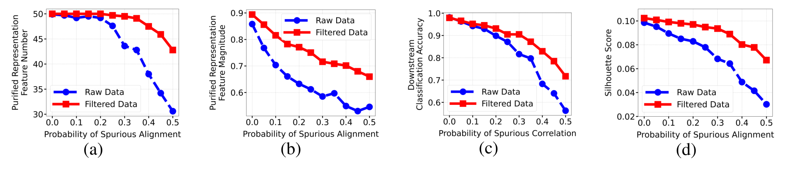
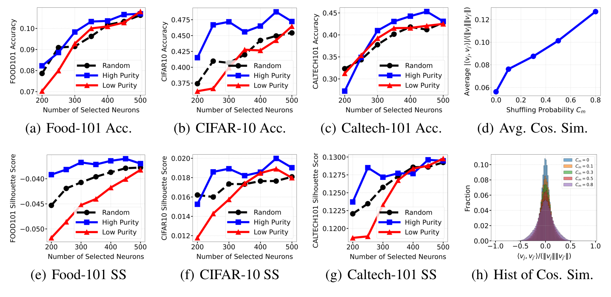
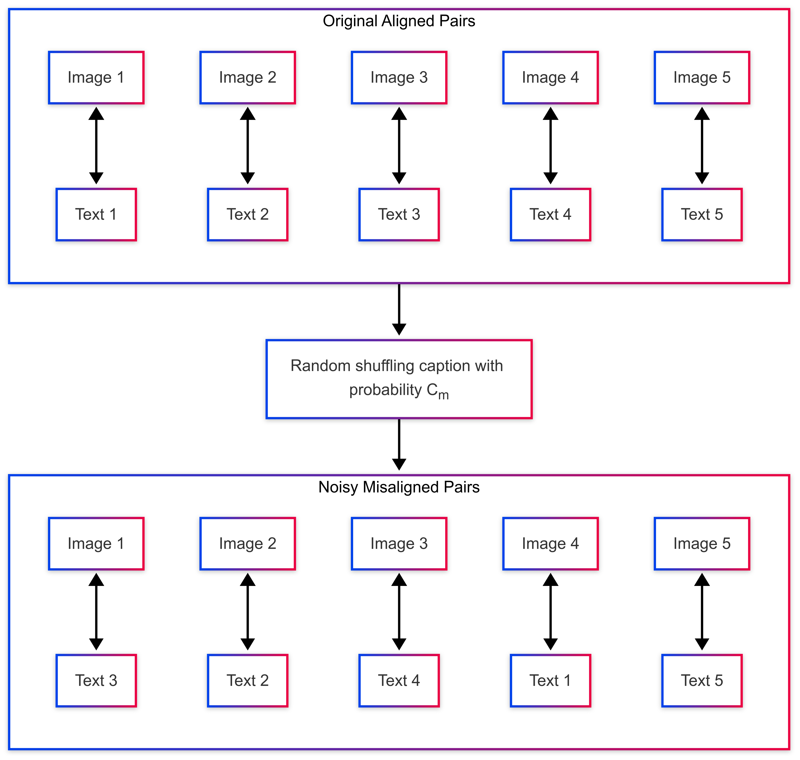
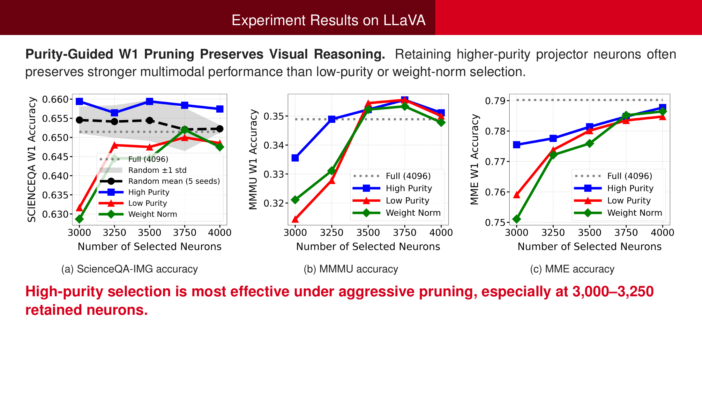
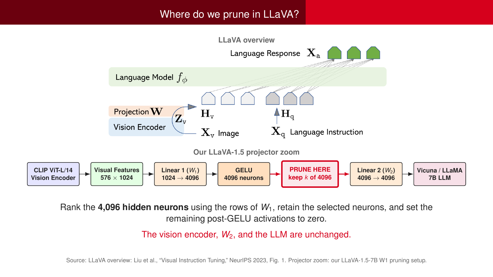

Joint training dynamics
We analyze stochastic gradient descent for two nonlinear ReLU encoders trained together with a contrastive objective. This connects the evolution of image and text features to the representations produced by training.
NeurIPS 2025
1 Rensselaer Polytechnic Institute2 New Jersey Institute of Technology3 University of Pennsylvania
How does noisy image–text alignment shape the features a model learns—and its ability to generalize?

Contrastive learning is a powerful framework for learning discriminative representations from image-text pairs. Despite its success, its theoretical foundations, especially when the image-text pair exhibits misalignment, remain underexplored. This paper provides the first theoretical analysis of contrastive learning under data misalignment, proving how the ground-truth modality-paired features are amplified while spurious features are suppressed through the training dynamics analysis. Specifically, we study two nonlinear encoders trained jointly with a contrastive loss and demonstrate that noisy (or misaligned) data pairs result in mixed representations and degrade the model’s generalization ability. In contrast, recaptioning and filtering improve the data alignment, which in turn purifies the features learned by neurons and subsequently enhances generalization. Our analysis identifies feature purity as a key factor in the success of contrastive learning and offers insights into how data quality and training procedures impact representation learning and downstream generalization. Theoretical insights are supported by experiments on standard benchmarks.
A web caption may omit something visible, or add information that is only spuriously associated with the image. Contrastive training must learn from these imperfect pairs. Our work traces how that mismatch affects neuron-level representations, from the optimization process to out-of-domain prediction.
Mismatched caption · illustrative
“A dog runs across a grassy field.”
Image-grounded caption · from the slides
“A blue Mercedes-Benz car parked beside a yellow vehicle.”
The first caption pairs car features with unrelated dog and grass features. The second describes what is actually visible.
From a wrong caption to mixed features. A contrastive objective treats the supplied image–text pair as a positive pair. When unrelated features repeatedly co-occur across these pairs, training can learn that spurious association. Under the paper’s structured-data assumptions, neurons can then mix semantic directions; recaptioning and filtering help restore feature purity. The image above illustrates the mismatch, not a measured neuron-level result.
We analyze stochastic gradient descent for two nonlinear ReLU encoders trained together with a contrastive objective. This connects the evolution of image and text features to the representations produced by training.
Spurious and missing text features can make neurons encode mixtures of relevant and irrelevant directions. Feature purity describes how selectively a neuron represents a feature, providing a link between data quality and generalization.
Under the paper’s assumptions, recaptioning and filtering reduce spurious correlations and improve semantic relevance. The resulting representations are purer and achieve stronger out-of-domain zero-shot classification.
In the CLIP experiments, projection-layer neurons are ranked by their average absolute cosine similarity to other neurons. Lower similarity indicates more orthogonal directions and serves as an empirical proxy for purity. We then test whether selecting these directions changes downstream performance.
In the paper’s simulated setting, raw and filtered (recaptioned) data are compared as spurious correlation probability increases. The four panels connect purified feature count, feature magnitude, out-of-domain classification, and class separation.


Captions are shuffled across image–text pairs with probability Cm. The practical misalignment experiment fine-tunes the final projection layers while freezing the other parameters, then measures changes in feature geometry and downstream performance.

The paper also compares CLIP and LaCLIP across pretraining datasets and downstream classification benchmarks. Together, the caption-quality comparison, controlled misalignment experiment, and matched-size neuron-selection study examine different parts of the same connection: data alignment, representation purity, and generalization.
Follow-up research · FCRC 2026 project review
Purity-guided vision-language model pruning
Building on our contrastive-learning analysis, we investigate whether feature purity can identify which neurons to retain in a larger vision-language model. In LLaVA-1.5-7B, we rank the 4,096 hidden neurons of the visual projector using the rows of its first linear layer (W₁), then mask unselected activations after GELU. The vision encoder, second linear layer, and language model remain unchanged.


Feature purity makes the learned representation itself an object of evaluation. The experiments show that retaining high-purity neurons can improve downstream performance relative to retaining a random or low-purity subset. This provides a concrete way to test the theoretical explanation through a change to the model’s representation.
The broader research question is how data quality and training procedures jointly determine which features survive—and which of those features support generalization beyond the training distribution.
@inproceedings{sun2025contrastive,
title={Contrastive Learning with Data Misalignment:
Feature Purity, Training Dynamics and
Theoretical Generalization Guarantees},
author={Sun, Jiawei and Zhang, Shuai and Li, Hongkang
and Wang, Meng},
booktitle={Advances in Neural Information Processing Systems},
year={2025},
url={https://openreview.net/forum?id=JMlYzOMDxI}
}